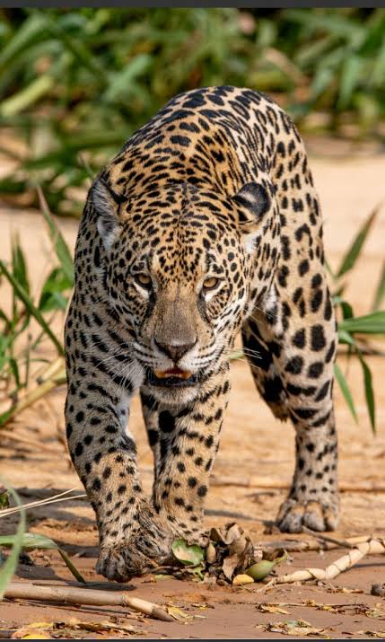

El jaguar es el felino más grande de América y el tercero del mundo, solo superado por el tigre y el león, con machos que pesan entre 56 y 96 kg y hembras más pequeñas. Su cuerpo es robusto y musculoso, cubierto por un pelaje amarillo o dorado con manchas características en forma de rosetas que tienen pequeños puntos negros en el centro, lo que sirve como camuflaje perfecto en su entorno. A diferencia de otros grandes felinos, posee la mordida más potente en relación con su tamaño, lo que le permite perforar los caparazones de tortugas o armadillos y cazar una gran variedad de presas como pecaríes, ciervos y caimanes. Es un animal solitario y territorial que destaca por ser un excelente nadador y trepador de árboles, cazando principalmente de noche. Su hábitat principal son las selvas tropicales densas, áreas boscosas y pantanos, distribuyéndose desde el sur de Estados Unidos y México hasta el norte de Argentina.